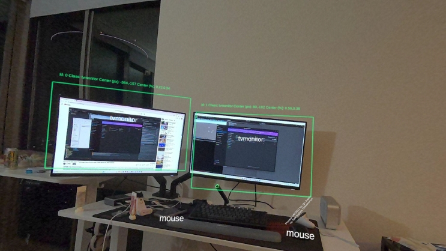
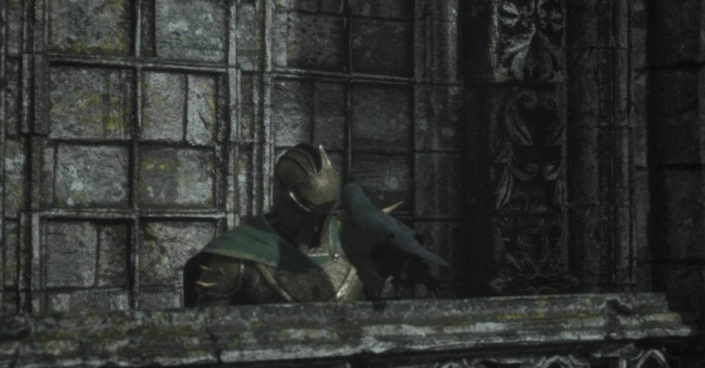
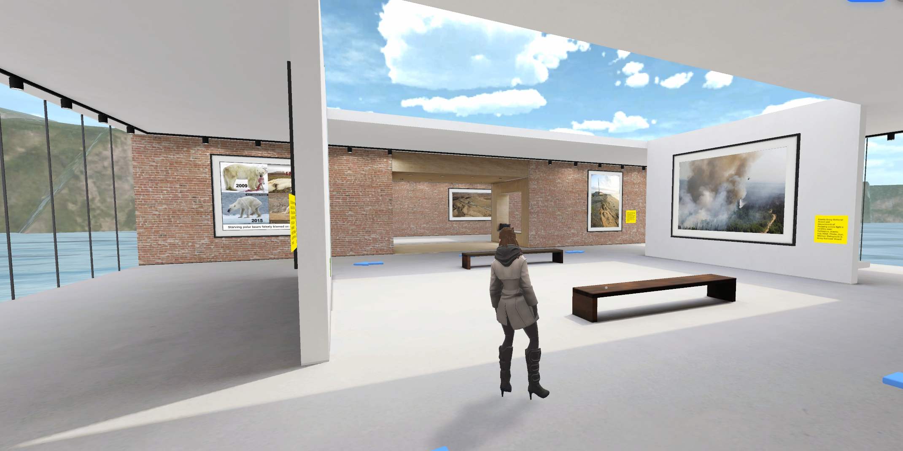

Metaverse for Education
Mixed Reality development log focusing on SDK migration and hybrid learning environments.
View Development Log →XR Designer. Currently at NYU IDM.

Mixed Reality development log focusing on SDK migration and hybrid learning environments.
View Development Log →
A high-fidelity virtual cinematic exploring Motion Capture workflows and 90s aesthetic stylization.
View Case Study →
Investigating student engagement through immersive VR museum experiences on Spatial.io.
View Case Study →New York University
MS in Integrated Design & Media
University of Toronto
Master of Education
University of Waterloo
Bachelor of Global Business and Digital Arts (Focus on UX & Creative Coding)
NYU VIP Team
XR Developer
Revela, Inc.
Freelance UX Designer
Freelance
XR Designer